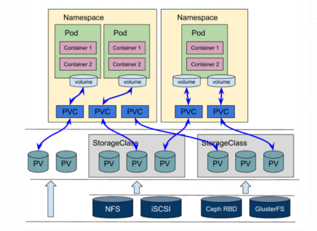
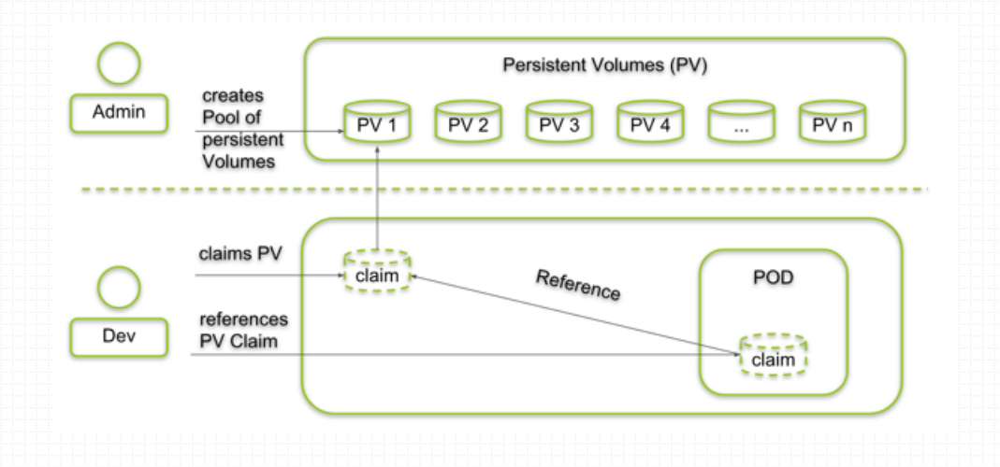
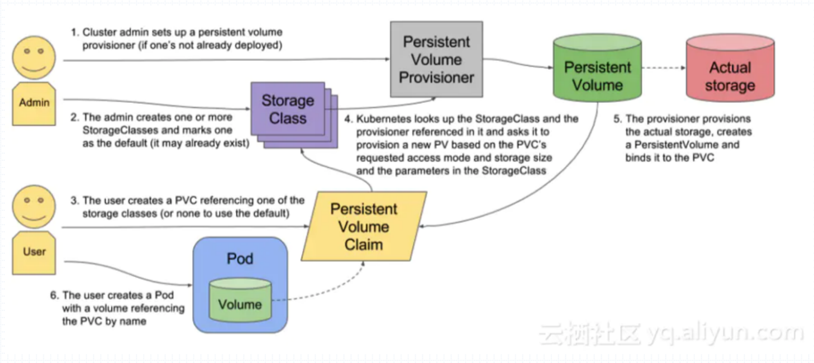

PV、PVC和StorageClass
在k8s上如果直接在pod上，以Volumes的形式定义存储卷然后挂载，那就要求所有使用挂载卷的用户必须对所使用的存储有所了解，否则用户将无法使用存储卷。k8s为了解决这种使用门槛，从而引入了PV和PVC的概念，让用户无需直接面对存储。
PV和PVC概念
PVC：Persistent Volume Claim，持久卷申请，简称PVC；k8s上标准的资源类型之一；由用户使用；名称空间级别；
PV：Persistent Volume，持久卷，可被PVC绑定；而PV一定要与某个真正的存储空间（一般是网络存储服务上的存储空间）对应起来，才能真正存储数据。由集群管理员负责管理。集群级别。
pv和pvc的使用逻辑

为了更方便用户的使用，k8s在存储卷上加入了中间层，用户需要使用存储卷时，只需要向PVC申请所需要的存储卷大小和相关参数，PVC会从后端的PV中自动挑出一个符合的PV将其绑定到pod之上。但是这种方式还存在一个弊端，PV必须要预先创建好，如果PV没有创建，那么PVC将无法从后段的PV中跳出可用的存储。从而让容器处于pending状态。

k8s为了解决上述问题，还引入了Storage Class，按用户的需求动态的生成PV。
StorageClass
StorageClass是为pv和pvc额外模拟出一层名称空间。PV是集群级别的，而PVC是名称空间级别的，其可以绑定任何PV，但为了能收束以下PVC的作用范围，所以使用模板来进行定义。
StorageClass的作用：
- 一个PVC一旦属于某个模板(StorageClass)。那么其只能在当前的SC下找PV。
- 作为创建PV的模板，可以将某个存储服务与SC关联起来，并且将该存储服务的管理接口提供给SC，从而让SC能狗仔存储服务上CRUD存储单元。
- 在同一个SC上声明PVC时，若无现存可匹配的PV，则SC能够调用管理接口直接创建出一个符合PVC声明的需求的PV来，这种PV的提供机制就称为Dynamic Provision(动态预配)。
存储卷使用逻辑
正常逻辑如下：

Pod的使用步骤
Pod使用这类存储的步骤：
- Admin：创建好PV；
- User: 按需创建PVC，而后创建Pod，在Pod调用persistentVolumeClaim类型的存储卷插件调用同一个名称空间中的PVC资源；
PV资源清单字段
除了存储卷插件之外，PersistentVolume资源规范Spec字段主要支持嵌套以下几个通用字段，它们用于定义PV的容量、访问模式和回收策略等属性。
1 | capacity <map[string]string>：指定PV的容量；目前，Capacity仅支持存储容量设定，将来还应该可以指定IOPS和吞吐量（throughput）。 |
PVC资源清单字段
定义PVC时，用户可通过访问模式（accessModes）、数据源（dataSource）、存储资源空间需求和限制（resources）、存储类、标签选择器、卷模型和卷名称等匹配标准来筛选集群上的PV资源，其中，resources和accessModes是最重的筛选标准。PVC的Spec字段的可嵌套字段有如下几个。
accessModes <[]string>：PVC的访问模式；它同样支持RWO、RWX和ROX三种模式；
1 | dataSources <Object>：用于从指定的数据源恢复该PVC卷，它目前支持的数据源包括一个现在卷快照对象（snapshot.storage.k8s.io/VolumeSnapshot）、一个既有PVC对象（PersistentVolumeClaim）或一个既有的用于数据转存的自定义资源对象（resource/object）； |
StorageClass资源清单字段
StorageClass资源的期望状态直接与apiVersion、kind和metadata定义于同一级别而无须嵌套于spec字段中，它支持使用的字段包括如下几个：
1 | allowVolumeExpansion <boolean>：是否支持存储卷空间扩展功能； |